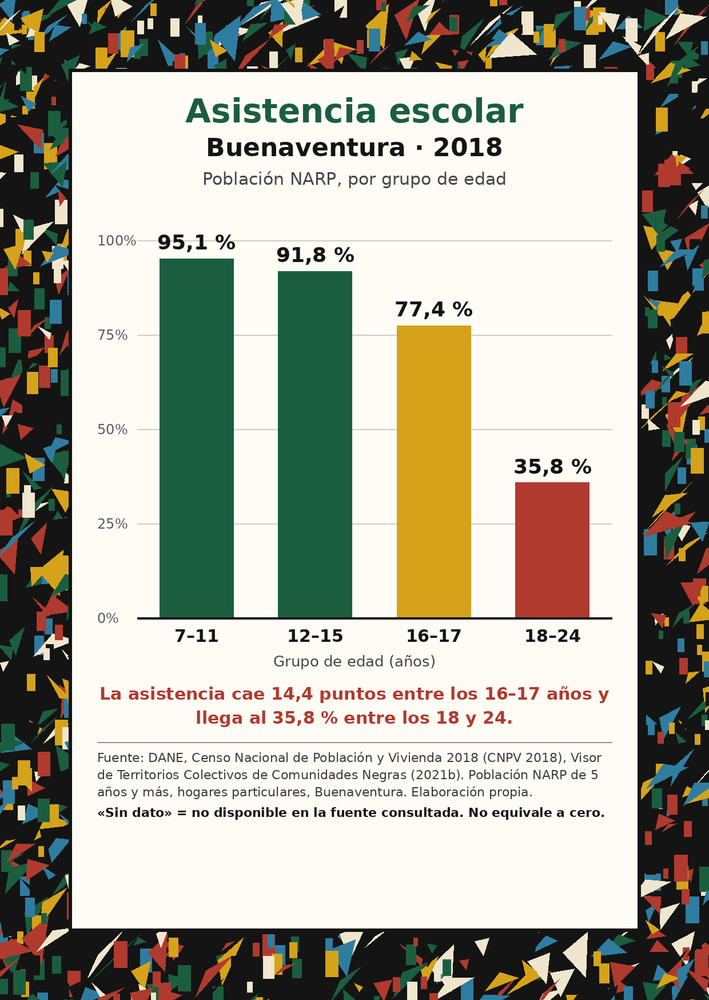

«Sin dato» significa que la cifra no está disponible en la fuente consultada. No equivale a cero.
Este gráfico ayuda a explorar una realidad territorial, pero no cuenta toda la historia. La cifra por sí sola no explica:
La pregunta para la comunidad: ¿qué información y qué voces necesitamos para comprender mejor esta realidad?
Fuente: DANE, CNPV 2018, Visor de Territorios Colectivos de Comunidades Negras (2021b). Población NARP de Buenaventura de 5 años y más. Elaboración propia. La narración es una lectura de los datos, no un testimonio comunitario.
Asistencia escolar · Buenaventura · 2018